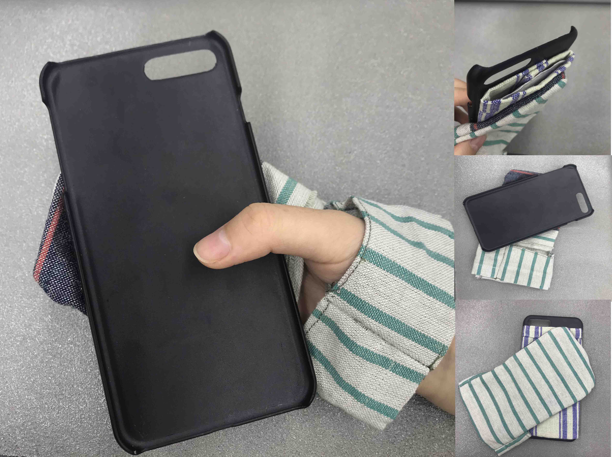
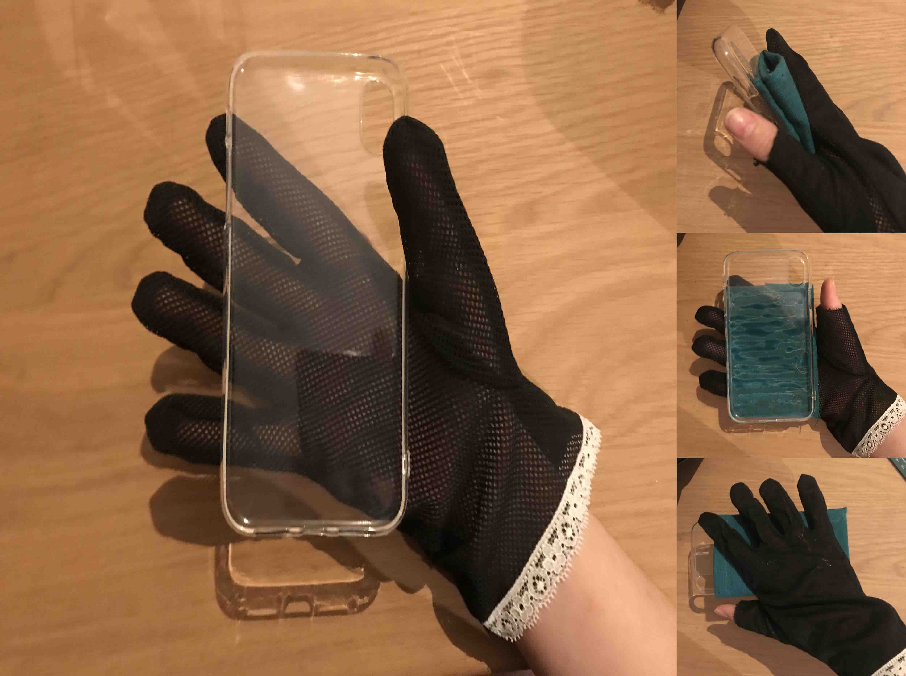

product
サ イッキン
麻縄ランプシェード
2019.7.29
イメージ
材料：麻縄
コンセプト
NO.1 電球は壊れやすいので、私は保護カバーを作りました。 必要な時に人々の安全を保証することができます。（地震など）
NO.2 麻縄の保護カバーはインテリアとしても使えます。 柔らかな光を作り出し、良い雰囲気を作れます。
作り方
編み物をする
使い方

電球もledも使えます
Target
NO.1 電球、LEDを使う人
NO.2 いい雰囲気を作りたい人
NO.3 麻縄が好きな人、編み物が好きな人
ホットケース
2019.7.15
コンセプト
冬に外で携帯を触る時、手がとても寒いです。 寒い冬に携帯を触ることができるのケース作ります
Target
スマホが手離さねい人
冬スマホが手離さたくない人
過程
一回目
一回目
最初の考えはただの手を温めることができるようにスマホケースを作ります。スマホケースとカイロとつながりたいです。 そしで、充電式のカイロを参考して、両手とも入れるのケースを作りました。

一回目完成品

参考写真
二回目
中間発表の時、先生のアドバイスを聞きました。 スマホケースと手袋を組み合わせて、カイロ使なくても暖かい携帯ケースを作りました。
二回目完成品
2
三回目
これが最後の完成品です。手袋の中は暖かいタオルを使いました、 携帯ケースと手袋をつなぐところで、カイロの袋を作りました。
最後完成品
まとめ
いい点：
最後完成品は前より手が動くやすい、カイロなくでも、外て遠慮なくて携帯が触ることをできました
悪い点：
同時に両手が入れらないです。